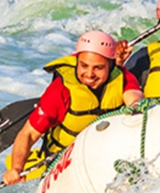

Adventure starts on the river! Our mission is to offer unforgettable whitewater rafting experiences with professional guides and breathtaking natural scenery. Whether you're seeking an adrenaline-filled adventure or a relaxing journey through stunning landscapes, our expertly guided trips are designed for rafters of all experience levels. At Reale's Rafting & Co, safety, exceptional service, and respect for nature are at the heart of everything we do. We ship adventure!